Apparels & Accessories
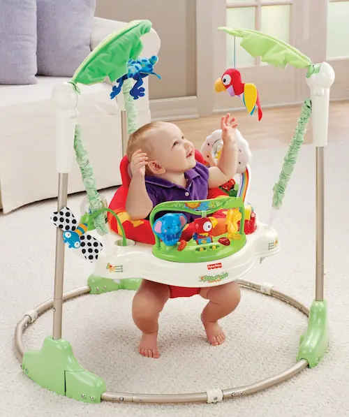
Baby Gear
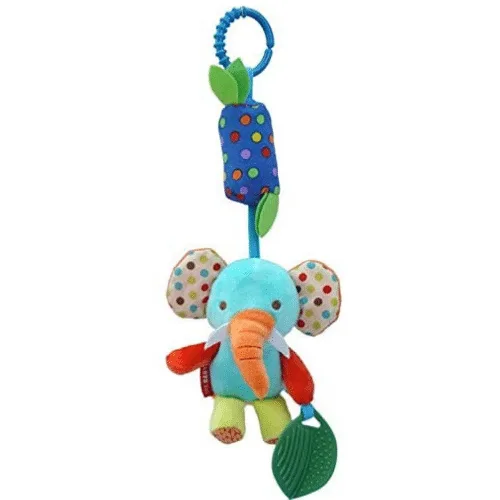
Baby Toys
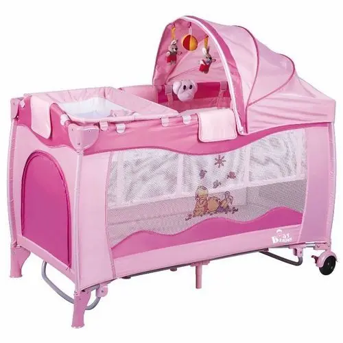
Baby Nursery
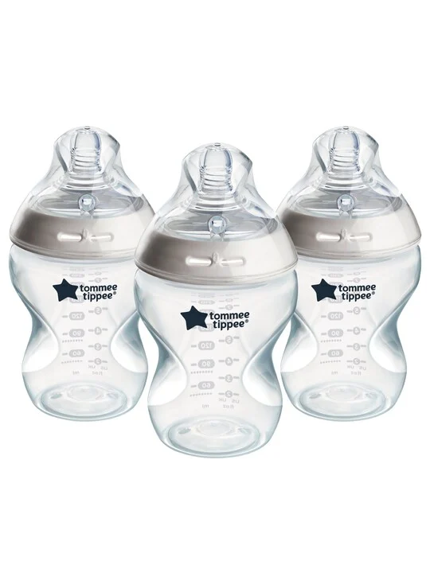
Baby Nursing
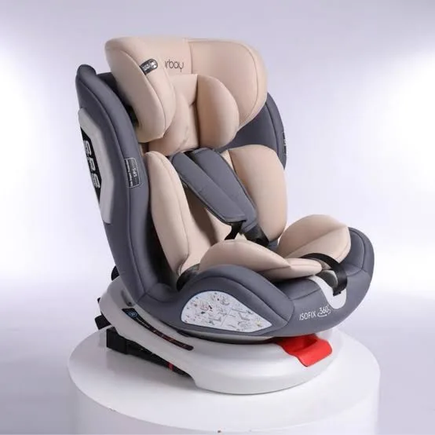
Baby Transport
Featured Products
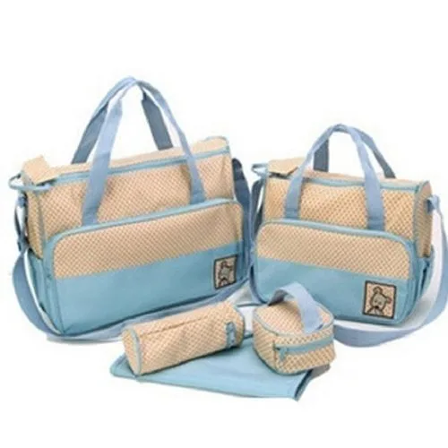
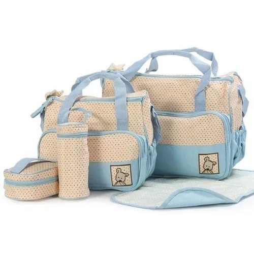
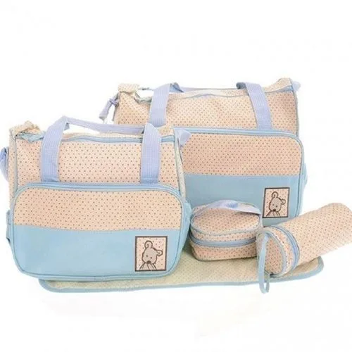
Key Features
- condition: 100% Brand New
- Main Material:Microfiber,Waterproof
- PVC lining Size:L41*W16*H30 cm
- Diaper Bags
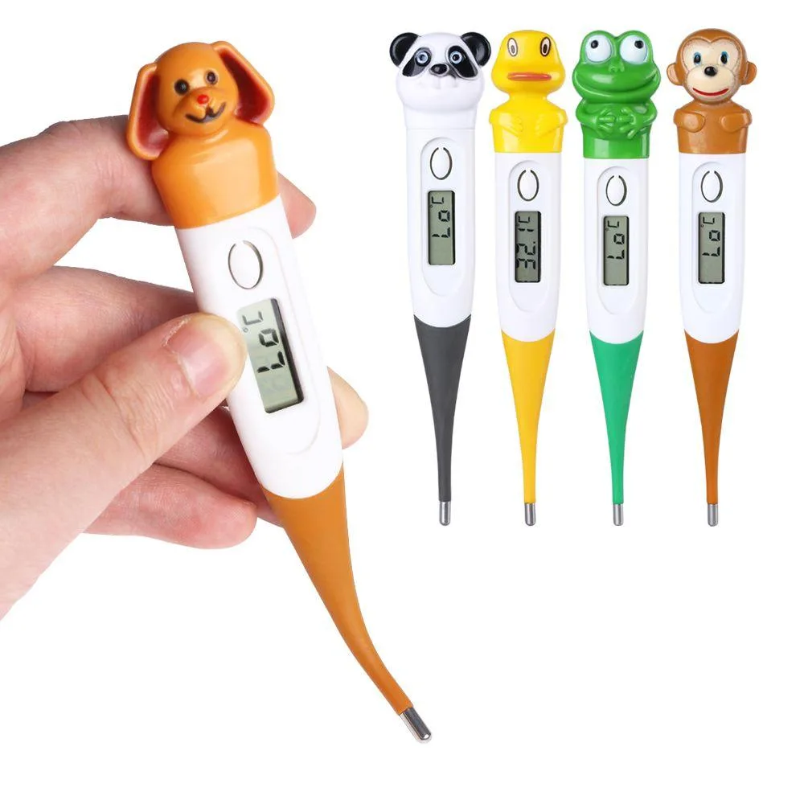
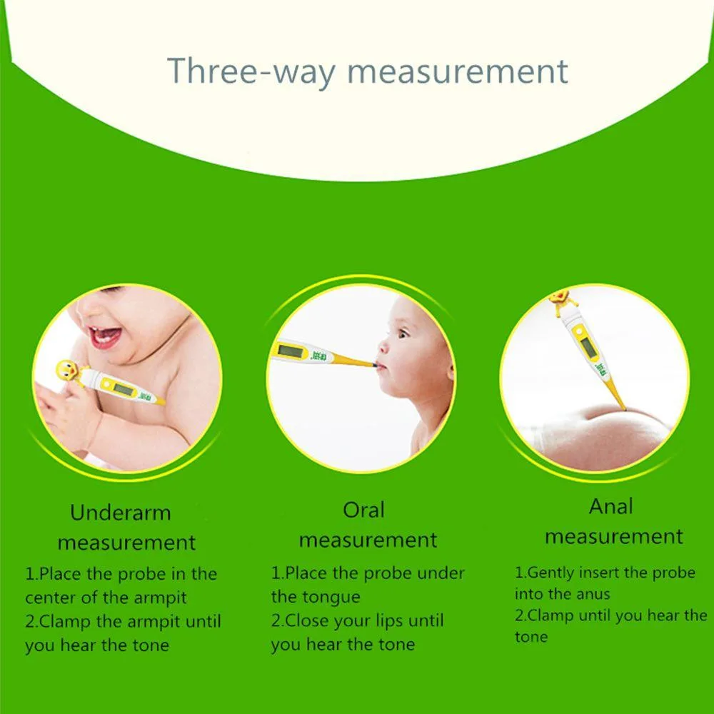
Digital Thermometers Are Medical Devices Used To Determine Body Temperature In Children, Babies, Adult Men And Women. Thermometers Are Used In Medical Care To Determine If A Patient Is Having A Fever. More Often Than Not, Fevers Are A Symptom Of underlying infection.
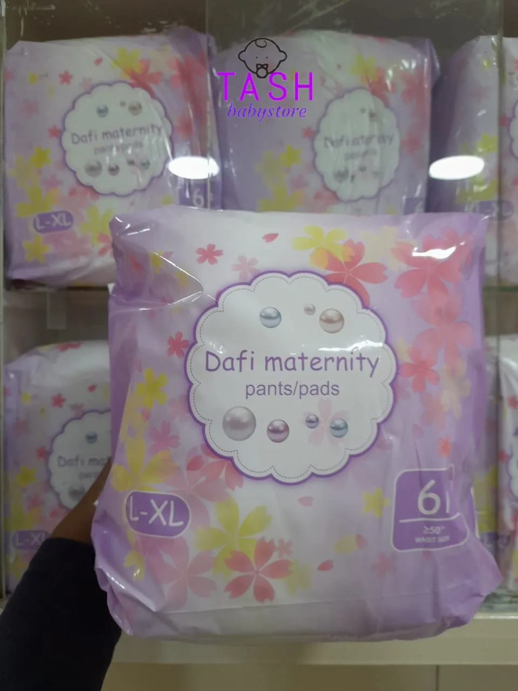
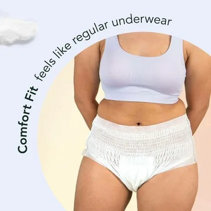
Dafi Maternity Pants/ Pads-Disposable Pads (L/XL) are lightweight briefs for women, which are used just for one time and then tossed away. After a few days of your baby’s delivery, the panties can be worn and no need for underwear.